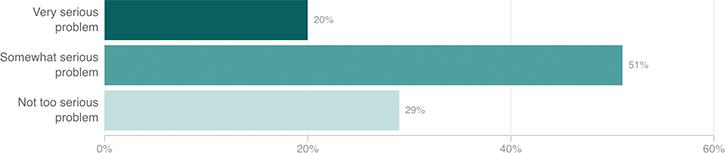

Child Care Costs Represent A Financial Burden For Some Parents
Nearly a third (31 percent) of parents who have a fee for child care say that the costs have caused a financial problem for their household. Of those, 71 percent say that these costs have represented a “very serious” or “somewhat serious” financial problem.
